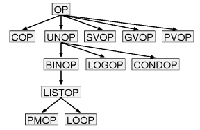
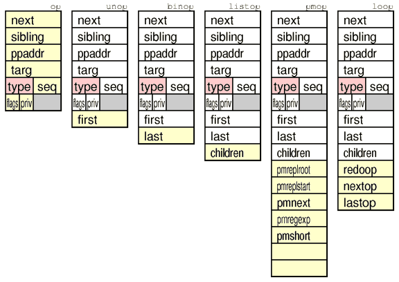
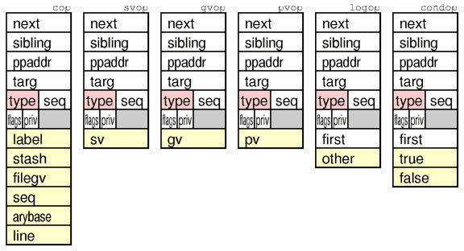

OP
A Perl program/subroutine is represented internally by a syntax tree
built from OP nodes. Perl (5.005) has 346 different OP-codes. In
Perl there are 12 different OP classes, that are related like the
following class hierarchy diagram shows:



© 1998 Gisle Aas
<aas@sn.no>
$Date: 1998/02/24 09:09:24 $